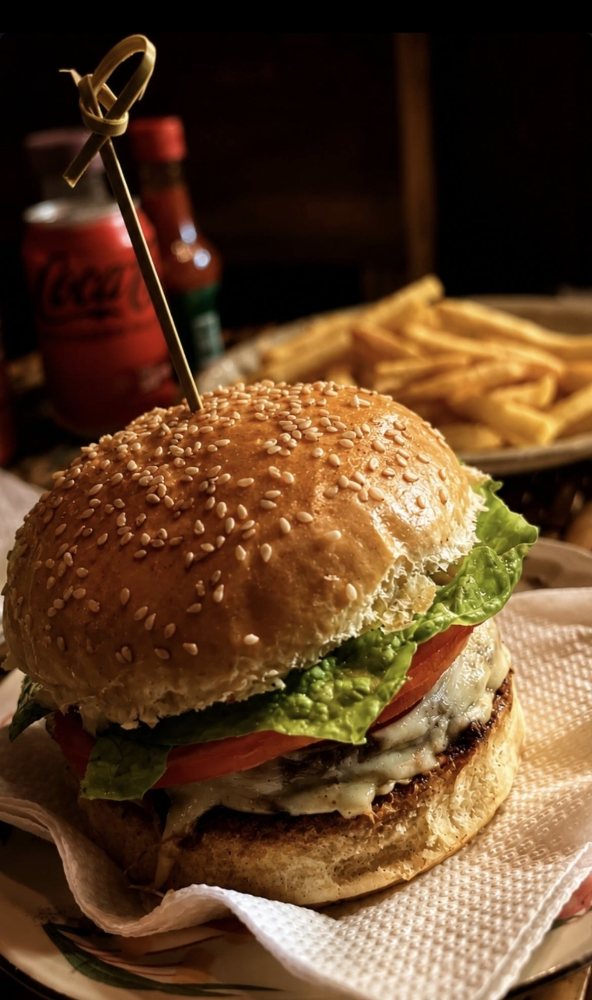
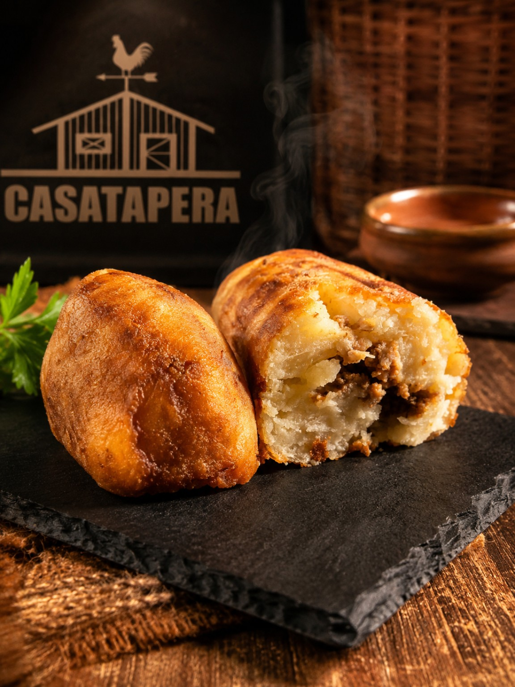

01CLÁSSICO DA CASAPORTO ALEGRE · RS
SABOR QUE
REÚNE.
Tem lugar que serve comida. E tem lugar que vira parte da história.
BOA COMIDA. BOAS HISTÓRIAS.
01 / A EXPERIÊNCIA
MAIS QUE
UMA MESA.
UM ENCONTRO.
A melhor parte de sair para comer é tudo o que acontece ao redor.
Uma conversa que se estende, um prato que surpreende, gente querida por perto. A Casa Tapera é um convite para desacelerar e aproveitar o momento.
Seu próximo encontro começa aqui ↗FEITO PARA COMPARTILHAR
02 / DA NOSSA COZINHA
BONS MOTIVOS
PARA VOLTAR.
Receitas cheias de personalidade, ingredientes que fazem diferença e aquele cuidado que dá para sentir em cada detalhe.
 02CROCANTE A CADA MORDIDA
02CROCANTE A CADA MORDIDA 03REFRESCÂNCIA DA CASA
03REFRESCÂNCIA DA CASA
04PETISCO IRRESISTÍVEL03 / NOSSA CASA
UM LUGAR COM PERSONALIDADE
UM LUGAR
PARA ESTAR
JUNTO.
Mais do que matar a fome, queremos fazer parte dos momentos que merecem ser lembrados. Chegue com fome, traga sua gente e sinta-se em casa.
Venha viver isso ↗04 / SUA VEZ
A MESA
ESTÁ POSTA.
Agora só falta você. Planeje sua visita e venha descobrir seu novo lugar favorito.
CASA TAPERA
Aberta dos Morros
Porto Alegre — RS
Confirme endereço, horários e disponibilidade pelos canais oficiais antes de sair.